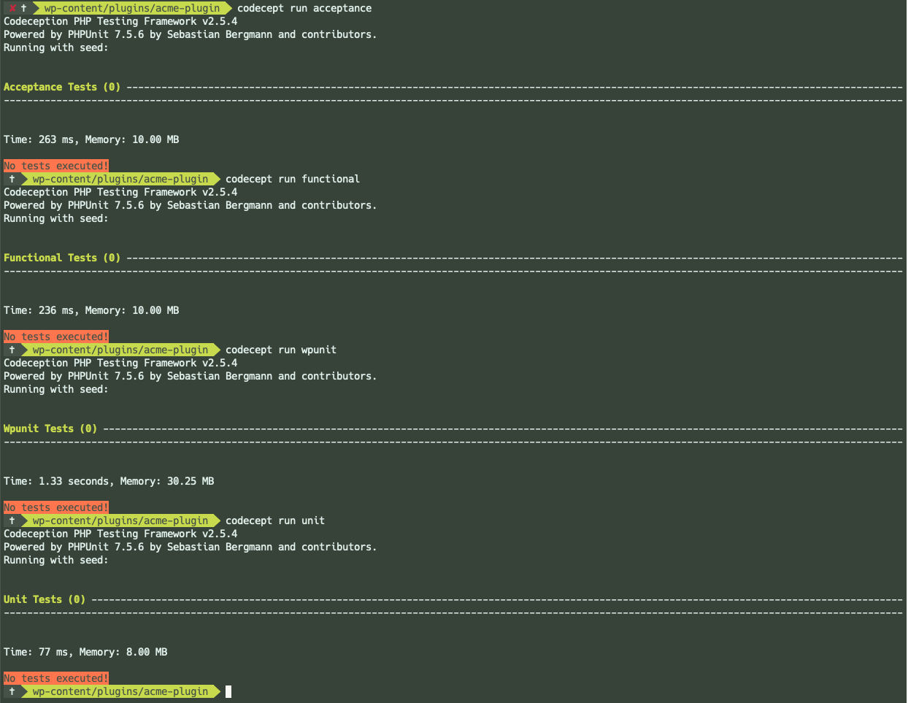

Configuration
This is the documentation for version 3 of the project. The current version is version 4 and the documentation can be found here.
Initializing wp-browser
While wp-browser can be configured manually creating each file the fastest way to bootstrap its configuration is by using its initialization template.
Throughout the steps below I will use the WordPress setup I've prepared before
From the root folder of the project, /Users/luca/Sites/wordpress/wp-content/plugins/acme-plugin in the example, run the command:
Composer installed Codeception binary (codecept) in the vendor folder of my project.
With the command above I'm telling Codeception to initialize a wp-browser project in the current folder.
When I click enter I'm presented with a list of questions, each answer will be used to configure the wp-browser project for me; one by one.
In the screenshot the answers I've provided to each question, with reference to the setup above:


wp-browser will try to provide a brief explanation of what each question is but below is the long version.
Long question explanation
I've tried to condense as much clarity as possible in the questions the codecept init wpbrowser command will ask but, for sake of brevity and space, there's no way I could provide inline a deeper explanation of each.
Below is a longer explanation of each question:
- How would you like the acceptance suite to be called?
- How would you like the functional suite to be called?
- How would you like the WordPress unit and integration suite to be called?
- How would you like to call the env configuration file?
- Where is WordPress installed?
- What is the path, relative to WordPress root URL, of the admin area of the test site?
- What is the name of the test database used by the test site?
- What is the host of the test database used by the test site?
- What is the user of the test database WPLoader should use?
- What is the password of the test database WPLoader should use?
- What is the table prefix of the test database WPLoader should use?
- What is the URL the test site?
- What is the email of the test site WordPress administrator?
- What is the title of the test site?
- What is the login of the administrator user of the test site?
- What is the password of the administrator user of the test site?
- Are you testing a plugin, a theme or a combination of both?
- What is the folder/plugin.php name of the plugin?
- Are you developing a child theme?
- Are you using a child theme?
- What is the slug of the parent theme?
- What is the slug of the theme?
- What is the slug of the theme you are using?
- Does your project needs additional plugins to be activated to work?
How would you like the acceptance suite to be called?
With reference to the testing levels definition this question provides you with the possibility to change the name of the acceptance-like test suite.
Common, alternative, names are ui, rest and user.
How would you like the functional suite to be called?
With reference to the testing levels definition this question provides you with the possibility to change the name of the functional-like test suite.
A common alternative name is service.
How would you like the WordPress unit and integration suite to be called?
With reference to the testing levels definition this question provides you with the possibility to change the name of the suite dedicated to integration and "WordPress unit" tests.
A common alternative name is integration.
How would you like to call the env configuration file?
Instead of configuring each module in each suite with the same parameters over and over Codeception supports dynamic configuration via environment files.
wp-browser will scaffold such a configuration for you and will use, by default, a file called .env to store the configuration parameters.
The file name might not suit all setups especially and this question allows changing that file name; common, alternative, file names are .env.tests, .env.codeception and similar.
Where is WordPress installed?
During tests the test code will need to access WordPress code, precisely wp-browser requires being pointed to the folder that contains the wp-load.php file.
The answer can be an absolute path, like /Users/luca/Sites/wordrpress, or a path relative to the folder where Codeception is installed like vendor/wordpress.
This path should be accessible by the machine that is running the tests; if you're running the tests from your machine (e.g. your laptop) that's just the path to the folder where WordPress is installed, /Users/luca/Sites/wordpress in the example configuration above.
If you are, instead, running the tests from within a virtualized machine (e.g. Vagrant or Docker) then the path should be the one used by the virtualized machine.
To make an example:
- on my machine WordPress is installed at
/Users/luca/Sites/wordpress - I've created a Docker container using the official WordPress image and bound the above folder into the container
- internally the container will put WordPress in the
/var/www/htmlfolder
If I run the tests from my host machine then WordPress root directory will be /Users/luca/Sites/wordpress, if I run the tests from within the Docker container then WordPress root folder will be /var/www/html.
Another example is Local by Flywheel:
- in the host machine the path to the WordPress root folder will be
/Users/luca/Local\ Sites/wordpress/app/public - from within the Docker container managed by Local the path will be
/app/public
If you need a solution that will work in both instances use a relative path: wp-browser will accept paths like ./../../../wordpress and will attempt to resolve them.
What is the path, relative to WordPress root URL, of the admin area of the test site?
This is usually /wp-admin but you might have the web-server, or a plugin, redirect or hide requests for the administration area to another path.
Some examples are /admin, /login and the like.
Mind that this is not the path to the login page but the path to the administrationo area; this will be used by wp-browser to find to the administration area in acceptance and functional tests.
What is the name of the test database used by the test site?
In my example setup it's wordpress.
This is the name of the database that is storing the information used by the site I can reach at http://localhost:8080.
I want to underline the word "test". Any site and any database you use and expose to wp-browser should be intended for tests; this means that it does not contain any data you care about as it will be lost.
What is the host of the test database used by the test site?
In my example setup it's 127.0.0.1:3306.
Here the same principle valid for Where is WordPress installed? applies: the database host is relative to the machine that is running the tests.
In my example I'm hosting the database locally, on my laptop, and my machine can reach it at the localhost address (127.0.0.1) on MySQL default port (3306).
If I am using the database of a Local by Flywheel site from my host machine then it might be something like 192.168.92.100:4050 (from the site "Database" tab); the same principle applies if I am using a Vagrant-based or Docker-based solution.
If I am running the tests from within a virtualized machine (a Docker container, a Vagrant box et cetera) then it would probably be localhost or 1270.0.0.1.
This detail will be used in the context of acceptance and functional tests by the WPDb module.
What is the user of the test database used by the test site?
In my example setup it's root as I'm using MySQL server root user to access the database during tests.
Depending on your setup it might be different; since wp-browser will need to not only read but write too to the database make sure to use a user that has full access to the database specified in the answer to the What is the host of the test database used by the test site? question.
This detail will be used in the context of acceptance and functional tests by the WPDb module.
What is the password of the test database used by the test site?
In my example setup it's empty as I've not set any password for the root account.
In your case it might be different and it should be the password associated with the user specified in the answer to the What is the user of the test database used by the test site? question.
This detail will be used in the context of acceptance and functional tests by the WPDb module.
What is the table prefix of the test database used by the test site?
In my example setup it's wp_; that value is taken from the WordPress installation configuration file.
To have any influence on the site wp-browser will need to modify the same database tables WordPress is using; as I did you can take this value from the wp-config.php file directly: it's the value of the $table_prefix variable.
This detail will be used in the context of acceptance and functional tests by the WPDb module.
What is the name of the test database WPLoader should use?
In my example setup it's tests.
During integration, or WordPress "unit" tests, wp-loader will need to load WordPress code.
Since WordPress code is not meant to be "modular" it does not support auto-loading or loading just parts of it; it's either almost all or nothing.
One of the first things WordPress does, when loading, is trying to connect to a database: if that database is not available then WordPress will not load.
In the answer to the question Where is WordPress installed? I've told wp-browser where to find WordPress code, in this answer I'm telling wp-browser what database it should use to bootstrap WordPress.
This detail will be used by the WPLoader module to bootstrap WordPress. It's highly recommended to use a different database from the one used for functional and acceptance tests.
What is the host of the test database WPLoader should use?
In my example setup it's 127.0.0.1:3306.
As in the answer to the question What is the name of the test database WPLoader should use? we're providing connection details about the database that should be used to bootstrap WordPress during integration and WordPress "unit" tests.
Again the database host is in relation to the machine running the tests, all the considerations done for What is the host of the test database used by the test site? apply.
This detail will be used by the WPLoader module to bootstrap WordPress.
What is the user of the test database WPLoader should use?
In my example it's root.
Similar to the question What is the user of the test database used by the test site? but in relation to the database specified in the question What is the name of the test database WPLoader should use?.
This detail will be used by the WPLoader module to bootstrap WordPress.
What is the password of the test database WPLoader should use?
In my example setup it's empty as I've not set any password for the root account.
Similar to the question What is the password of the test database used by the test site? but in relation to the database specified in the question What is the name of the test database WPLoader should use?.
This detail will be used by the WPLoader module to bootstrap WordPress.
What is the table prefix of the test database WPLoader should use?
In my example setup it's wp_.
Similar to the question What is the table prefix of the test database used by the test site? but in relation to the database specified in the question What is the name of the test database WPLoader should use?.
This detail will be used by the WPLoader module to bootstrap WordPress.
What is the URL the test site?
In my example setup it's http://localhost:8080.
This is the full URL you would have to enter in the browser, on the machine that is running the tests, to reach the test WordPress site homepage.
What is the email of the test site WordPress administrator?
In my example setup it's admin@wp.localhost.
This detail will be used by the WPLoader module to bootstrap WordPress and, while required, it's usually not relevant unless you're testing email communications.
What is the title of the test site?
In my example setup it's Acme Plugin Test Site.
This detail will be used by the WPLoader module to bootstrap WordPress and, while required, it's usually not relevant unless you're testing around the site title.
What is the login of the administrator user of the test site?
In my example setup it's admin.
This detail will be used by the WPBrowser or WPWebDriver modules to fill in the login details for the administrator user.
It should be the same as the one that allows you to access the site administration area in the WordPress test site, http://localhost:8080/wp-admin in my example.
What is the password of the administrator user of the test site?
In my example setup it's password.
This detail will be used by the WPBrowser or WPWebDriver modules to fill in the login details for the administrator user.
It should be the same as the one that allows you to access the site administration area in the WordPress test site, http://localhost:8080/wp-admin in my example.
Are you testing a plugin, a theme or a combination of both?
Depending on the answer the WPLoader module will load, during integration or WordPress "unit" tests, your WordPress plugin or theme.
If you replied with both (for "a combination of both") then you'll be able to choose the plugins and theme to load in integration and WordPress "unit" tests in the following questions.
What is the folder/plugin.php name of the plugin?
This question will be asked only if you replied plugin to the question Are you testing a plugin, a theme or a combination of both?.
In my example setup it's acme-plugin/plugin.php.
This is the <folder>/<main-plugin-file>.php path, relative to the WordPress installation plugins folder, to the plugin you are testing.
The main plugin file is the one that contains the plugin header.
This detail will be used by the WPLoader module to bootstrap WordPress and load your plugin or theme in integration and WordPress "unit" tests.
Are you developing a child theme?
This question will be asked only if you replied theme to the question Are you testing a plugin, a theme or a combination of both?.
Enter yes if you are developing a child theme.
This detail will be used by the WPLoader module to bootstrap WordPress and load a parent theme along with your theme in integration and WordPress "unit" tests.
Please note that wp-browser will not download and install the parent theme in the WordPress installation for you.
Are you using a child theme?
This question will be asked only if you replied both to the question Are you testing a plugin, a theme or a combination of both?.
Enter yes if you are using a child theme.
This detail will be used by the WPLoader module to bootstrap WordPress and load a parent theme along with your theme in integration and WordPress "unit" tests.
Please note that wp-browser will not download and install the parent theme in the WordPress installation for you.
What is the slug of the parent theme?
This question will be asked only if you replied yes to the question Are you developing a child theme?.
Reply with the slug of the parent theme, that's usually the name of the folder the parent theme lives in, e.g. twentyseventeen.
This detail will be used by the WPLoader module to bootstrap WordPress and load a parent theme along with your theme in integration and WordPress "unit" tests.
Please note that wp-browser will not download and install the parent theme in the WordPress installation for you.
What is the slug of the theme?
This question will be asked only if you replied theme to the question Are you testing a plugin, a theme or a combination of both?.
Reply with the slug of the theme, that's usually the name of the folder the theme lives in, e.g. twentyseventeen.
This detail will be used by the WPLoader module to bootstrap WordPress and load your theme in integration and WordPress "unit" tests.
What is the slug of the theme you are using?
This question will be asked only if you replied both to the question Are you testing a plugin, a theme or a combination of both?.
Reply with the slug of the theme you are using, that's usually the name of the folder the theme lives in, e.g. twentyseventeen.
This detail will be used by the WPLoader module to bootstrap WordPress and load the theme integration and WordPress "unit" tests.
Does your project needs additional plugins to be activated to work?
Whether you're testing a plugin, a theme or a combination of both you might need some additional plugins to run your tests.
As an example if I'm testing a WooCommerce extension I need the WooCommerce plugin to test it; this is the place where I can define it.
The required plugins follow the same format as the one used in the question What is the folder/plugin.php name of the plugin?: <plugin-folder>/<plugin-main-file>.php; in the case of WooCommerce it would be woocommerce/woocommerce.php.
This detail will be used by the WPLoader module to bootstrap WordPress and load the required plugins in integration and WordPress "unit" tests.
Please note that wp-browser will not download and install the required plugins in the WordPress installation for you.
If you entered a wrong value
No worries, just correct the value in the environment file or in the suites configuration files.
The environment file will have the name you specified in the answer the question How would you like to call the env configuration file?.
The suites configuration files can be found in tests/<suite>.suite.yml; e.g. the wpunit suite configuration file will be tests/wpunit.suite.yml file.
Final steps
To complete the setup I have removed any demo content from the site and activated my plugin in the plugins administration page.
In the tests/acceptance.suite.yml file and in the tests/functional.suite.yml file, the configuration file for the acceptance and functional suites respectively, the WPDb module configuration contains a dump configuration parameter:
The dump parameter is inherited by the WPDb module from the Codeception Db module and defines the SQL dump file that should be loaded before, and between, tests to reset the testing environment to a base known state.
As for any other database-related operation wp-browser will not create the dump for me. I use MySQL binary to export the database state (a dump) with the command:
mysqldump -u root -h 127.0.0.1 -P 3306 wordpress > /Users/luca/Sites/wordpress/wp-content/plugins/acme-plugin/tests/_data/dump.sql
I could use any other combination of tools to produce the dump; using mysql binary is not a requirement.
Graphic interfaces like SequelPro, Adminer and the like would be perfectly fine.
Pre-flight check
There is one last check I need to make before jumping into the creation of tests: making sure all the paths and credentials I've configured wp-browser with are correct.
The bootstrap process generated four suites for me: acceptance, functional, integration and unit. If you have modified the default suite names during the setup your suites names might differ though.
To test the setup I will run each suite and make sure it can run correctly empty of any test. To run a suite of tests I will use the codecept run command:
How comes I'm not using the command codecept run (without specifying the suite names)? See the FAQ entry.

If you cannot run all the suites without issues then check your configuration settings again, read the errors and see If you entered a wrong value